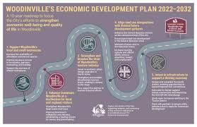

**Economy and Development** The economy represents the system of production, distribution, and consumption of goods and services within a society, serving as the foundation for national progress and individual well-being. Economic development goes beyond mere growth metrics like GDP to encompass broader improvements in living standards, infrastructure, education, and healthcare. Modern economies face critical challenges such as income inequality, technological disruption, and sustainable resource management, while development efforts focus on reducing poverty, creating employment opportunities, and building resilient institutions. The transition from agricultural to industrial and now digital economies has transformed global markets, with emerging concepts like circular economies and inclusive growth reshaping traditional development models. International organizations and governments work to balance economic expansion with environmental protection through policies promoting renewable energy, fair trade, and social welfare programs. Successful development requires not just financial investment but also human capital development, innovation ecosystems, and good governance to create equitable opportunities for all citizens in an increasingly interconnected world economy.
As per the latest NASSCOM Start-up Report 2015, start-ups created 65,000 new jobs in 2014 and by 2020, the number is expected to touch 2,50,000. That’s an ambitious plan and as of now, driven almost entirely by private sector initiative. If PM Modi succeeds in establishing a pro-active start-up eco-system as intentioned, then the potential for new job creation will be far greater than NASSCOM’s projections.
The international business community accepts India as one of the most attractive destinations for investments and of late, has discovered India’s potential for innovation and creativity. The last three years has seen significant scale up in international investments in start-ups and this has led to skyrocketing valuations, exceeding $ 1 billion in some cases, a phenomena that would have been unbelievable just five years ago. And this has been achieved with little or no support from the government.
PM Modi rightly recognizes this fact and understands that this is the right time to bring in the government to define a conducive policy framework, backed by necessary financial and tax incentives, and nurture the creative and innovative potential of the youth. He also sees the downstream benefits of job creation in smaller towns and villages.
Road Map For Economy and Dev

Roads are crucial for India's economic development, facilitating trade, connecting regions, boosting industrialization, and creating employment, ultimately contributing to a larger and more integrated economy